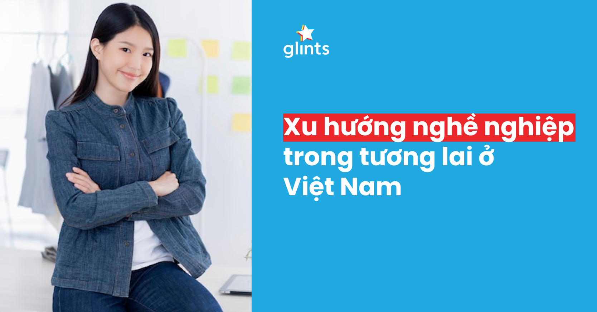

Thị trường tuyển dụng 2025: 6 xu hướng định hình tương lai việc làm
I. Xu hướng công nghệ và kỹ năng định hình tuyển dụng
Thế hệ Gen Z đang bước vào giai đoạn chuyên môn mạnh mẽ: công nghệ AI, làm việc linh hoạt và tích hợp ban đầu nghề nghiệp với công nghệ. Bài viết này sẽ khám phá 6 xu hướng định hình thị trường tuyển dụng năm 2025, từ việc ưu tiên kỹ năng đến chiến lược giữ chân nhân tài. Những xu hướng này không chỉ phản ánh sự thay đổi của lực lượng lao động mà còn giúp doanh nghiệp thích ứng với bối cảnh kinh tế số hóa nhanh chóng, nơi công nghệ trở thành yếu tố cốt lõi.
1. Tích hợp AI trong quy trình tuyển dụng
AI đang cách mạng hóa cách doanh nghiệp tìm kiếm và đánh giá ứng viên. Từ sàng lọc CV tự động đến phỏng vấn ảo sử dụng chatbot, AI giúp giảm thời gian tuyển dụng lên đến 50% theo báo cáo của McKinsey năm 2024. Ví dụ, các công ty như Google và Amazon sử dụng AI để phân tích kỹ năng ứng viên qua dữ liệu LinkedIn hoặc GitHub, đảm bảo tính khách quan và giảm thiên kiến. Ở Việt Nam, các nền tảng như TopCV và VietnamWorks cũng đang tích hợp AI để khớp việc làm chính xác hơn. Tuy nhiên, thách thức là đảm bảo AI không loại bỏ ứng viên đa dạng, đòi hỏi doanh nghiệp phải đào tạo hệ thống để tránh phân biệt đối xử.
2. Ưu tiên kỹ năng số và mềm
Năm 2025, kỹ năng số như lập trình, dữ liệu phân tích và an ninh mạng sẽ là bắt buộc, nhưng kỹ năng mềm như giao tiếp, làm việc nhóm và thích ứng sẽ quyết định sự khác biệt. Theo World Economic Forum, 85% việc làm năm 2030 sẽ yêu cầu kỹ năng mới, thúc đẩy xu hướng "skills-based hiring" thay vì bằng cấp. Ví dụ, các công ty công nghệ Việt Nam như FPT ưu tiên ứng viên có kinh nghiệm thực tế qua dự án cá nhân hơn là bằng đại học. Để ứng phó, người trẻ cần tham gia các khóa học trực tuyến trên Coursera hoặc edX, kết hợp với phát triển kỹ năng mềm qua hoạt động nhóm hoặc tình nguyện.
3. Học tập suốt đời và phát triển liên tục
Xu hướng "lifelong learning" sẽ trở thành tiêu chí tuyển dụng, với doanh nghiệp ưu tiên ứng viên chủ động cập nhật kiến thức. Các chương trình đào tạo nội bộ, như upskilling qua nền tảng LinkedIn Learning, sẽ phổ biến hơn. Theo khảo sát Deloitte 2024, 70% Gen Z mong đợi công ty hỗ trợ học tập, giúp giảm tỷ lệ nghỉ việc. Ở Việt Nam, các doanh nghiệp như VinGroup đang đầu tư vào học viện nội bộ để phát triển nhân tài, khuyến khích nhân viên học AI và kỹ năng xanh. Điều này không chỉ nâng cao năng suất mà còn tạo lợi thế cạnh tranh trong thị trường lao động khan hiếm.
II. Thay đổi trong môi trường làm việc và văn hóa doanh nghiệp
1. Làm việc linh hoạt và từ xa trở thành tiêu chuẩn
Mô hình hybrid (kết hợp văn phòng và từ xa) sẽ là tiêu chuẩn, với 60% doanh nghiệp toàn cầu áp dụng theo báo cáo Gartner 2024. Ở Việt Nam, sau đại dịch, các công ty như Viettel và Techcombank cho phép làm việc từ xa 2-3 ngày/tuần, giúp tăng sự hài lòng của nhân viên. Tuy nhiên, thách thức là duy trì văn hóa đội nhóm, đòi hỏi công cụ như Zoom hoặc Microsoft Teams. Ứng viên Gen Z ưu tiên công ty linh hoạt, vì vậy doanh nghiệp cần xây dựng chính sách rõ ràng để cạnh tranh.
2. Tập trung vào sức khỏe tinh thần và cân bằng công việc
Sức khỏe tinh thần sẽ là yếu tố hàng đầu, với các chương trình hỗ trợ như tư vấn tâm lý và nghỉ phép tinh thần. Theo Tổ chức Y tế Thế giới (WHO), burnout ảnh hưởng đến 77% lao động trẻ, thúc đẩy xu hướng "well-being at work". Ở Việt Nam, các startup như Tiki cung cấp gói chăm sóc sức khỏe toàn diện, giúp giảm tỷ lệ nghỉ việc 20%. Doanh nghiệp cần tích hợp đánh giá sức khỏe vào quy trình tuyển dụng, đồng thời khuyến khích văn hóa nghỉ ngơi để giữ chân tài năng.
3. Đa dạng, hòa nhập và bình đẳng giới
DEI (Diversity, Equity, Inclusion) sẽ là bắt buộc, với doanh nghiệp ưu tiên ứng viên từ các nhóm thiểu số. Theo McKinsey, công ty đa dạng có lợi nhuận cao hơn 35%. Ở Việt Nam, các chương trình như "Women in Tech" của VNISA thúc đẩy bình đẳng giới trong lĩnh vực công nghệ. Thách thức là vượt qua thiên kiến văn hóa, đòi hỏi đào tạo lãnh đạo và chính sách tuyển dụng minh bạch để xây dựng môi trường hòa nhập thực sự.
III. Chiến lược giữ chân nhân tài và bền vững
Giữ chân nhân tài sẽ là ưu tiên hàng đầu năm 2025, khi tỷ lệ nghỉ việc cao do cạnh tranh toàn cầu. Các chiến lược tập trung vào phát triển cá nhân và giá trị xã hội sẽ giúp doanh nghiệp xây dựng lòng trung thành.
1. Cá nhân hóa trải nghiệm nhân viên
Sử dụng dữ liệu để cá nhân hóa lộ trình nghề nghiệp, như kế hoạch thăng tiến dựa trên sở thích. Theo Gallup 2024, nhân viên cảm thấy được đánh giá cao sẽ ở lại lâu hơn 2 lần. Ở Việt Nam, các công ty như Unilever áp dụng hệ thống feedback liên tục để điều chỉnh, giúp tăng sự gắn kết. Điều này đòi hỏi công nghệ HR như AI phân tích để dự đoán nhu cầu nhân viên.
2. Phát triển lãnh đạo nội bộ và thăng tiến
Thay vì tuyển ngoài, doanh nghiệp sẽ ưu tiên đào tạo nội bộ để phát triển lãnh đạo. Chương trình mentorship và rotation job sẽ phổ biến, giúp giảm chi phí tuyển dụng 30%. Ví dụ, PwC Việt Nam có chương trình "Future Leaders" cho nhân viên trẻ. Xu hướng này khuyến khích Gen Z ở lại lâu hơn, vì họ mong muốn cơ hội thăng tiến rõ ràng trong vòng 2-3 năm.
3. Tích hợp trách nhiệm xã hội và bền vững vào tuyển dụng
CSR (Corporate Social Responsibility) sẽ là yếu tố thu hút, với ứng viên ưu tiên công ty xanh và xã hội. Theo Nielsen, 78% Gen Z chọn công ty có cam kết bền vững. Ở Việt Nam, các doanh nghiệp như Masan tích hợp ESG (Environmental, Social, Governance) vào tuyển dụng, như ưu tiên ứng viên có kinh nghiệm dự án xanh. Thách thức là đo lường tác động thực tế, nhưng điều này giúp xây dựng thương hiệu tuyển dụng mạnh mẽ trong tương lai.